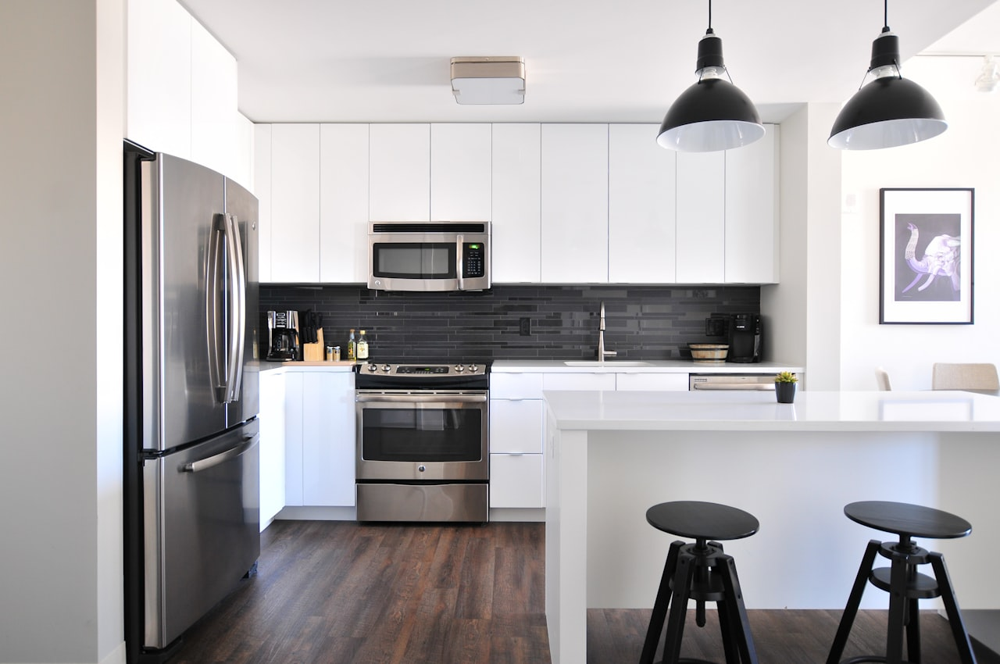

Cockroaches are more than a sign of an unwelcome houseguest; they are a genuine health concern. Their shed skins, droppings, and saliva contain allergens that are a well-documented trigger for asthma and allergies, particularly in children, and roaches mechanically spread bacteria like salmonella and E. coli as they travel from drains and garbage to your food-prep surfaces. In Yucaipa, the species we encounter most are German cockroaches, which dominate kitchens and bathrooms and reproduce with astonishing speed, along with the larger American cockroaches favoring warm, damp areas and Oriental cockroaches that thrive in basements, drains, and crawl spaces.
Yucaipa Pest Control approaches cockroach control as both a pest problem and a health problem. Our experienced technicians start with a free inspection to identify the species and locate the harborage points, the warm, humid, hidden cracks where roaches cluster and breed. We rely on professional gel baits placed precisely in these harborages, which roaches consume and carry back, transferring the active ingredient through the population. We combine baiting with insect growth regulators (IGRs) that interrupt the breeding cycle by preventing nymphs from maturing, a step that makes all the difference for German roaches given how fast they multiply.
Sanitation guidance rounds out the program, because removing the food, water, and clutter roaches depend on dramatically improves and sustains results. We treat residential and commercial kitchens alike, and recurring service plans keep the breeding cycle broken for the long term. Call (909) 277-2002 for a free cockroach inspection in Yucaipa and a plan that protects your family's health.

When to Call for Cockroach Control in Yucaipa
Spotting the early warning signs gives you the chance to act before the situation spirals into something far more expensive. Here are the most common indicators that it's time to call a professional:
- Live roaches scattering when you turn on a light at night
- Pepper-like droppings or dark smear marks in cabinets and drawers
- A musty, oily odor that grows stronger as the infestation builds
- Egg cases (oothecae), small brown capsules, tucked in crevices
- Shed skins from molting nymphs near harborage points
- Smear marks along grease-prone areas behind appliances
- Roaches emerging from drains, sinks, or floor cracks in basements
Act Before It Gets Worse
A handful of pests can multiply into a serious infestation in a surprisingly short time. At the first hint of a problem, reach out to Yucaipa Pest Control at (909) 277-2002 for a fast inspection.
Need Help With Cockroach Control?
Call Yucaipa Pest Control for fast, reliable service.
Get Help: (909) 277-2002Cockroach Control FAQ
Why Professional Cockroach Control Matters
Cockroaches, especially German roaches, are built to defeat DIY efforts. A single female and her offspring can produce hundreds of new roaches in a matter of months, so unless treatment reaches the breeding population, the few you kill with a can of spray are replaced almost overnight. Over-the-counter sprays are also frequently repellent, which scatters roaches deeper into wall voids and adjacent rooms instead of eliminating them, and many roach populations have developed resistance to common retail insecticides. The result is a problem that seems to improve for a day and then comes roaring back.
Professional cockroach control succeeds by targeting biology and behavior together. experienced technicians identify the species and place gel baits precisely in harborage zones, where roaches feed and then transfer the active ingredient to others through contact and feeding, a chain reaction sprays cannot replicate. Crucially, professionals add insect growth regulators that prevent nymphs from ever reaching breeding age, collapsing the population over time. Pair this with expert sanitation recommendations to eliminate food and water sources, and you get genuine, lasting control along with meaningful reduction of the allergens that make roaches a health hazard.
How Our Cockroach Control Works
Every visit follows a step-by-step method refined over years of hands-on experience. Here's exactly how the cockroach control process unfolds:
Free Inspection & Species ID
We identify whether you have German, American, or Oriental cockroaches and locate harborage points in kitchens, bathrooms, drains, and voids. Species and source drive the treatment plan.
Targeted Gel Baiting
We place professional gel baits directly in harborage cracks and crevices. Roaches feed and carry the active ingredient back, transferring it through the population for a domino effect.
Growth Regulators & Sanitation
Insect growth regulators stop nymphs from maturing and breeding, breaking the cycle. We pair this with sanitation guidance to remove the food and water roaches depend on.
Follow-Up & Ongoing Protection
We return to monitor bait stations and confirm the population is collapsing. Recurring service plans keep growth regulators and baits working so the colony cannot rebuild.
Want a Professional Opinion?
Call Yucaipa Pest Control to discuss your cockroach control needs with an experienced technician.
Get Help: (909) 277-2002How to Prevent Cockroach Control Problems
Smart prevention is almost always cheaper and easier than dealing with an established infestation. Put these technician-approved steps to work around your property:
- Clean up crumbs, grease, and spills promptly, especially behind and under appliances
- Store food and pet food in sealed containers and avoid leaving dishes overnight
- Fix leaky faucets and pipes, since roaches need water as much as food
- Take out trash regularly and use cans with tight-fitting lids
- Seal cracks and crevices around cabinets, baseboards, and pipe penetrations
- Reduce cardboard and paper clutter that gives roaches harborage and food
- Run bathroom and kitchen exhaust fans to cut the humidity roaches favor
Should You DIY or Call a Pro?
While some minor pest issues can be handled by homeowners, most infestations require professional expertise, specialized products, and proper safety training. Consider the following comparison:
| Factor | DIY Approach | Professional Service |
|---|---|---|
| Breeding Cycle | Spray ignores fast-reproducing nymphs | Growth regulators stop breeding entirely |
| Bait Transfer | Surface spray kills only what it hits | Gel bait spreads through the population |
| Resistance | Roaches resist common store sprays | Professional baits overcome resistance |
| Repellency | Sprays scatter roaches into voids | Non-repellent baiting draws them out |
| Health Risk | Allergens and bacteria remain | Population reduction lowers allergen load |
| Root Cause | Food and water sources ignored | Sanitation guidance sustains results |
Talk to a Cockroach Control Expert
Every day you wait gives pests more time to spread. Get Yucaipa Pest Control on the job today.
Call (909) 277-2002 Now